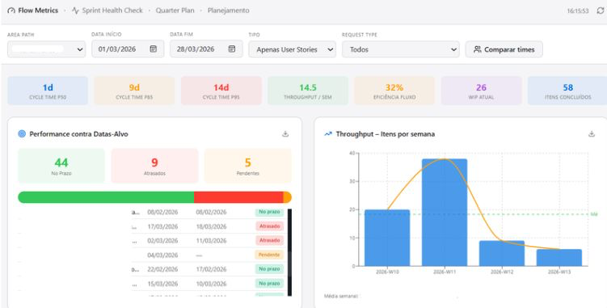
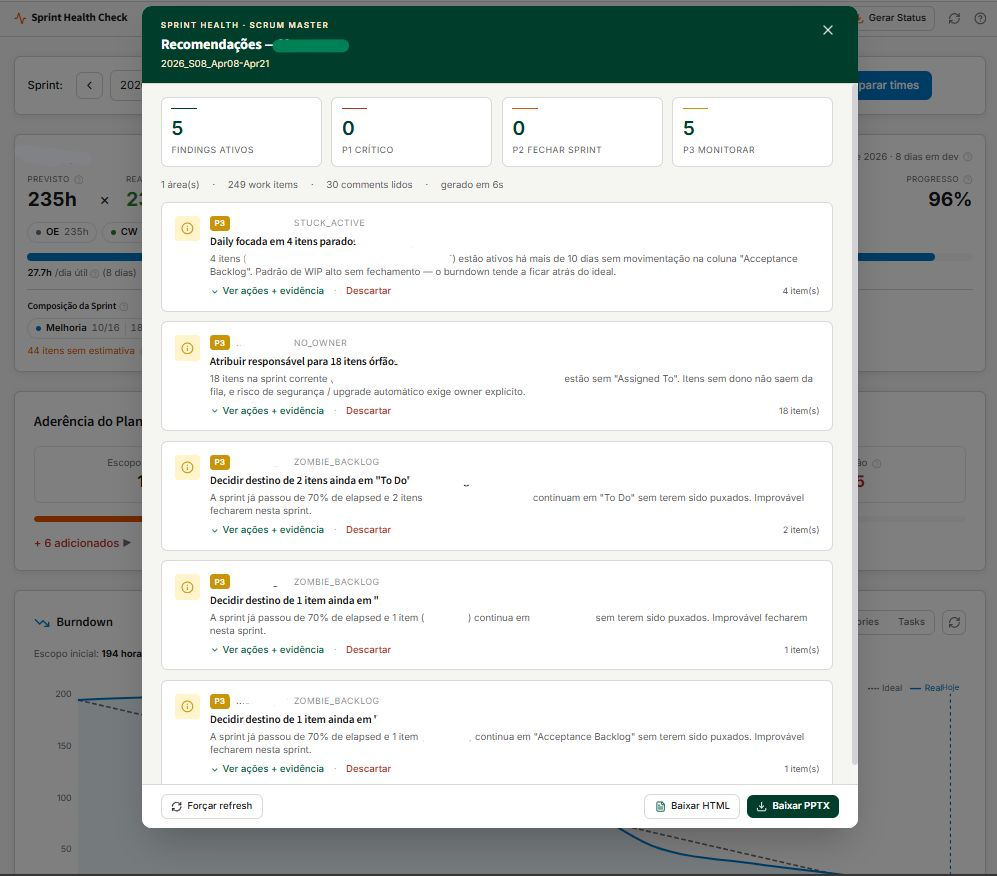
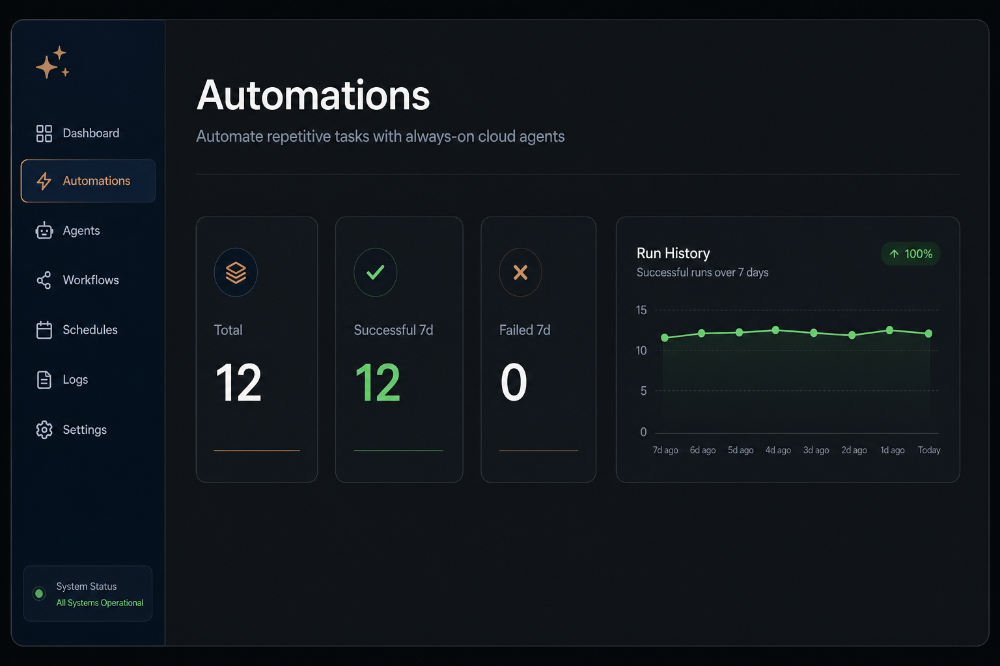

Rotina sobrecarregada
Você apaga incêndio o dia inteiro: Slack, urgências, rituais intermináveis. Mesmo assim, nada avança de forma estrutural. O operacional consome 100% da sua energia.
Ganhe maturidade executiva, domine métricas de fluxo real e multiplique sua influência em até 12 semanas. Tudo aplicado diretamente no seu contexto atual de trabalho, sem teorias genéricas.
+6 anos em Gestão Lean Agile
Startups · PMEs · Enterprise
Três cenários que aparecem em praticamente toda conversa com líderes ágeis. Ninguém resolve isso só com mais certificação.
Você apaga incêndio o dia inteiro: Slack, urgências, rituais intermináveis. Mesmo assim, nada avança de forma estrutural. O operacional consome 100% da sua energia.
Perante a diretoria, você ainda é visto como o profissional que "organiza a cerimônia", não como alguém que influencia decisões, prioridades e resultados de negócio.
Quando precisa defender uma mudança ou pedir investimento, você não tem métricas sólidas de fluxo nem narrativa executiva para provar o valor do que propõe.
Metodologia aplicada no seu contexto real. Sem slide genérico, sem framework decorativo. Cada pilar vira decisão e entrega na sua operação.
Conectar entrega ao negócio: alinhar squads, OKRs e governança para que agilidade deixe de ser buzzword e vire resultado mensurável.
Leitura end-to-end de fluxo para enxergar gargalos antes que virem crise na review.
DoR, DoD, acordos e estabilização operacional. Previsibilidade real, não promessa de velocity.
Narrativas com dados, trade-offs claros e conversas difíceis com produto, engenharia e liderança. Sem depender de carisma vazio.
Portfólio de impacto, posicionamento estratégico e plano de 90 dias para ser visto e remunerado como líder sênior de verdade.
Bônus da mentoria: aprender a transformar dados de Jira, DevOps e ferramentas de gestão em leitura operacional, automações e agentes no seu contexto.
Flow metrics e planejado vs realizado. O foco é provocar conversa e decisão, não encher tela.
Painéis e decks compartilháveis com time e liderança. Visibilidade que escala além de quem montou.
Scripts e integrações que mantêm indicadores vivos sem retrabalho manual toda semana.
Cloud agents que rodam fluxos completos: status report, sync com ferramentas de gestão e análise entregue por e-mail.



Entrou com portfolio de milhares de cartões, aprovações espalhadas e indicadores que não refletiam a operação. Saiu com visibilidade de capacidade, apontamento estruturado e leitura que a liderança usa para decidir prioridade, não só acompanhar status.
Eu já estive exatamente onde você está hoje: trabalhando 10 horas por dia, participando de rituais intermináveis e sentindo que, apesar do esforço brutal, eu era visto apenas como o operacional que "facilita reuniões". O que me fez virar o jogo, destravar promoções e liderar operações de mais de 180 pessoas foi entender o sistema, dominar os dados de fluxo e mudar meu posicionamento. É esse caminho exato, sem atalhos teóricos, que eu vou desenhar com você.
Case Smiles com 180+ colaboradores e 292 entregas estratégicas. Processos, qualidade, custo e estratégia alinhados.
CS enterprise B2B: adoção, expansão e retenção. Conectar uso da plataforma a outcomes de negócio.
Governança em 12 squads. PI Planning, fórum VP quinzenal, dashboards exec/tático/operacional. Redução de 20 dias no tempo de entrega. PDLC com IA.
App mobile Smiles, login unificado GOL|Smiles, evolução KMM e OKRs.
2 squads cross-funcionais. Kanban, lead time, WIP.
Startups, software-house, múltiplos clientes. +50% value delivery, +40% produtividade.
Objeções comuns, respondidas de forma direta.
Sim. É justamente onde a mentoria mais entrega valor. O método não exige maturidade prévia: ele parte do caos real, mapeia fluxo, estabiliza políticas e constrói narrativa com dados. Se sua operação é imprevisível hoje, você está no perfil ideal.
O ciclo dura 12 semanas. A expectativa é de 2 a 3 horas semanais: missões aplicadas no seu trabalho e participação nos 6 encontros ao vivo. Tudo foi desenhado para quem já está no operacional.
É uma conversa de diagnóstico (cerca de 45 minutos) para mapear seu contexto, identificar onde você está travado e avaliar se a mentoria faz sentido para o seu momento. Sem pitch agressivo. Se não for fit, você sai com clareza mesmo assim.
A seleção e o diagnóstico são individuais, com personalização total ao seu contexto real de trabalho. A mentoria combina missões aplicadas no seu dia a dia, encontros ao vivo e acesso à comunidade de líderes estratégicos para troca entre pares de alto nível. Você evolui no seu cenário, sem conteúdo genérico em massa.
Vagas limitadas por ciclo. A seleção acontece exclusivamente via diagnóstico. Garanta sua conversa antes do próximo grupo fechar.
Vagas limitadas por ciclo. A seleção é feita exclusivamente via Diagnóstico Estratégico.